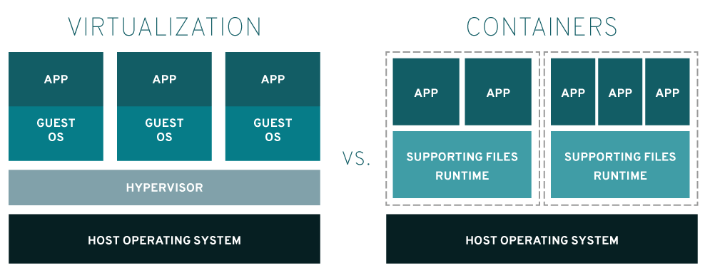

Containers vs VMs
Visão Geral
Containers e máquinas virtuais (VMs) são abordagens para empacotar ambientes de computação. Elas combinam vários componentes de TI e isolam esses ambientes do restante do sistema. A principal diferença entre elas está nos componentes que são isolados, o que afeta a escalabilidade e a portabilidade de cada abordagem.
O que é um Container?
Um container é um software que contém todos os componentes e funcionalidades necessários para executar uma aplicação. As aplicações mais modernas são compostas por vários containers, cada qual responsável por uma função específica. Containers não utilizam um hipervisor. Além disso, costumam ser medidos em megabytes e são considerados uma forma mais ágil e rápida de gerenciar o isolamento de processos.
Um dos fatores que mais contribui para o sucesso dos containers é a portabilidade. Assim como peças de LEGO™ que se encaixam, containers individuais podem ser trocados e movidos entre ambientes diferentes com facilidade. Quando uma aplicação e suas dependências são empacotadas em um container, é possível implantá-la onde for necessário. Ela funcionará exatamente da mesma forma seja no laptop do desenvolvedor, em um data center, na nuvem ou na edge.
O Docker, uma plataforma open source para criação, implantação e gerenciamento de aplicações em containers, foi desenvolvido para facilitar a criação e o uso de containers.
O que é uma Máquina Virtual?
Uma máquina virtual (VM) é um ambiente de computação isolado criado por um software de virtualização que abstrai o hardware físico do computador. Cada VM executa seu próprio sistema operacional e aplicações, e é completamente independente de outras VMs no mesmo hardware físico.
As VMs são criadas e gerenciadas por um hipervisor, que é um software que permite que múltiplas VMs compartilhem um único hardware físico. O hipervisor aloca recursos de computação, como CPU, memória e armazenamento, para cada VM conforme necessário.
Diferenças entre TI Tradicional e Nativa em Nuvem
TI Tradicional
- Monolítico: Aplicações grandes e complexas
- Deploy lento: Processo de deploy demorado
- Escalabilidade vertical: Aumentar recursos da máquina
- Manutenção complexa: Requer mais gerenciamento
TI Nativa em Nuvem
- Microserviços: Aplicações divididas em serviços menores
- Deploy rápido: Processo automatizado e rápido
- Escalabilidade horizontal: Adicionar mais instâncias
- Manutenção simplificada: Gerenciamento automatizado
Como Elas Funcionam?

Fonte: Red Hat - Containers vs VMs
Qual é a Opção Ideal para Mim?
Use Containers quando:
- Desenvolvimento de aplicações modernas
- Microserviços
- CI/CD pipelines
- Aplicações stateless
- Escalabilidade horizontal é importante
- Portabilidade entre ambientes é crítica
Use VMs quando:
- Aplicações legadas
- Isolamento total é crítico
- Diferentes sistemas operacionais
- Aplicações stateful complexas
- Compliance rigoroso
- Migração de sistemas existentes
Bare Metal, VMs e Containers
Bare Metal
- Performance máxima: Sem overhead de virtualização
- Controle total: Acesso direto ao hardware
- Simplicidade: Menos camadas de abstração
- Custo: Requer hardware dedicado
Máquinas Virtuais (VMs)
- Isolamento completo: Cada VM é independente
- Flexibilidade: Diferentes sistemas operacionais
- Segurança: Isolamento total entre ambientes
- Legacy support: Suporte a aplicações antigas
Containers
- Eficiência: Compartilham o kernel do host
- Portabilidade: Funcionam em qualquer ambiente
- Escalabilidade: Fácil de escalar horizontalmente
- Deploy rápido: Inicialização em segundos
Comparação Prática
| Aspecto | Containers | VMs |
|---|---|---|
| Isolamento | Processo | Máquina completa |
| Tamanho | MBs | GBs |
| Inicialização | Segundos | Minutos |
| Uso de recursos | Baixo | Alto |
| Portabilidade | Alta | Média |
| Segurança | Boa | Excelente |
| Complexidade | Baixa | Alta |
Referência
Este conteúdo é baseado exclusivamente no material da Red Hat sobre Containers vs VMs.